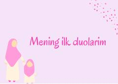

MIBolajonlar uchun kundalik hayotda o'qiladigan zaruriy duolar to'plami.
Ushbu kitobda bolajonlar uchun kundalik hayotda o'qiladigan eng muhim duolar arabcha matni, o'qilishi va o'zbekcha ma'nolari bilan birga keltirilgan. Unda uyg'onish, uxlash, uyga kirish va chiqish kabi holatlarga oid duolar jamlangan.